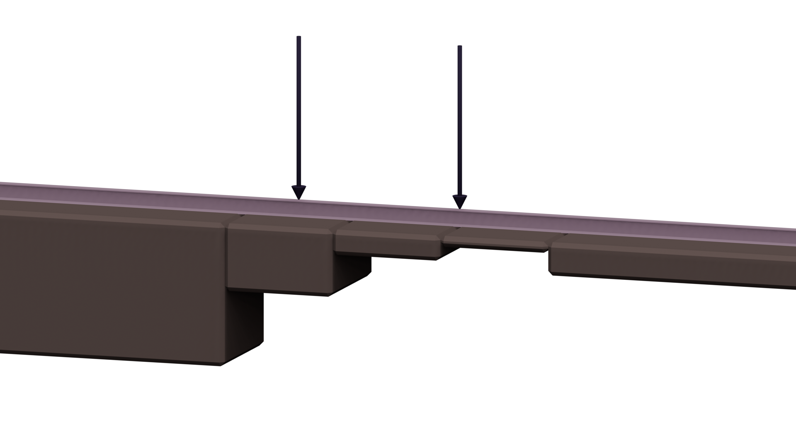
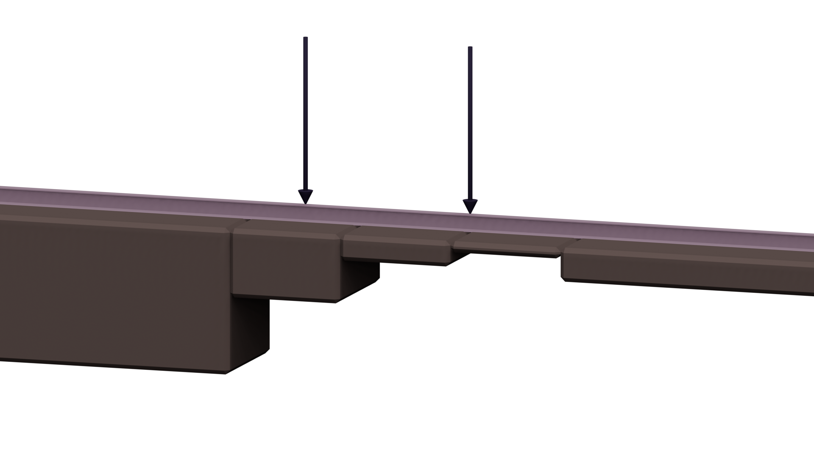

Josiah Murray
Infinite beams, undetermined coefficients, and the Laplace transform
Supervisors:
Dr Ravi Pethiyagoda, Professor Mike Meylan,
Professor Natalie Thamwattana


 

To find the Laplace domain solution:
1. Split domain
2. Apply Laplace transform
\[EI\partial_x^4 y + m\partial_t^2 y + C(x) \partial_t y + k(x)y = \delta(x-vt)\] $\downarrow$ \[\begin{split}EI\partial_x^4 \bar{y} &+ \left[ms^2 + Cs + k\right] \bar{y} =\\ & \big[ ms+C(x) \big] y(x,0)\\ &+ m\partial_t y(x,0)\\ &+ \frac{P}{v}e^{-s(x-x_p)/v}H(x-x_p)\end{split}\]
3. Solve ODE in $x$
Apply ansatz $e^{r(s)x}$ giving characteristic equation \[EIr^4 + (ms^2 + Cs + k) = 0,\] and search for particular solutions of the form $Ae^{B x}$
4. Solve for unknown coefficients
Enforce continuity of function and derivatives in $x$. This results in a linear system for the unknown coefficients in each region.
\[\begin{split}\bar y_j(x,s) = &\sum_{q=1}^4 b_{q,j}(s) e^{r_{q,j}(s)x} + \frac{P e^{-s(x-x_p)/v}H(x-x_p)}{v\left( EI{(s/v)}^4 + ms^2 +C_j s + k_j \right)}\\ + &\begin{cases} \frac{\mu_1(ms+C_j-vm\omega_1)}{EI\omega_1^4+ms^2+C_js+k_j}e^{\omega_1(x-x_p)} + \frac{\mu_2(ms+C_j-vm\omega_2)}{EI\omega_2^4+ms^2+C_js+k_j}e^{\omega_2(x-x_p)}, & x-x_p<0,\\ \frac{\mu_3(ms+C_j-vm\omega_3)}{EI\omega_3^4+ms^2+C_js+k_j}e^{\omega_3(x-x_p)} + \frac{\mu_4(ms+C_j-vm\omega_4)}{EI\omega_4^4+ms^2+C_js+k_j}e^{\omega_4(x-x_p)},& x-x_p>0, \end{cases}\\ \end{split}\]
\[EI\partial_x^4 y + m\partial_t^2 y + C(x) \partial_t y + k(x)y = \delta(x-vt)\] $\downarrow$ \[EI\partial_x^4 \bar{y} + \left[ms^2 + Cs + k\right] \bar{y} = \big[ ms+C(x) \big] y(x,0) + m\partial_t y(x,0) + \frac{P}{v}e^{-s(x-x_p)/v}H(x-x_p)\]
which results in an ODE in x that can be solved using undetermined coefficients.In general, we'd like to know two things:
- The multiplicity of the roots.
- The sign of the real components of the roots.
\[\begin{split}\bar y_j(x,s) = &\sum_{q=1}^4 b_{q,j}(s) e^{r_{q,j}(s)x} + \frac{P e^{-s(x-x_p)/v}H(x-x_p)}{v\left( EI{(s/v)}^4 + ms^2 +C_j s + k_j \right)}\\ + &\begin{cases} \frac{\mu_1(ms+C_j-vm\omega_1)}{EI\omega_1^4+ms^2+C_js+k_j}e^{\omega_1(x-x_p)} + \frac{\mu_2(ms+C_j-vm\omega_2)}{EI\omega_2^4+ms^2+C_js+k_j}e^{\omega_2(x-x_p)}, & x-x_p<0,\\ \frac{\mu_3(ms+C_j-vm\omega_3)}{EI\omega_3^4+ms^2+C_js+k_j}e^{\omega_3(x-x_p)} + \frac{\mu_4(ms+C_j-vm\omega_4)}{EI\omega_4^4+ms^2+C_js+k_j}e^{\omega_4(x-x_p)},& x-x_p>0, \end{cases}\\ \end{split}\] where $\mu_\Box$ and $\omega_\Box$ are coefficients related to the travelling wave solution.

$v=1\,\text{m/s}$
$v=1\,\text{m/s}$
$v=30\,\text{m/s}$
- Based on a figure from: Indraratna, B., Babar Sajjad, M., Ngo, T., Gomes Correia, A., & Kelly, R. (2019). Improved performance of ballasted tracks at transition zones: A review of experimental and modelling approaches. Transportation Geotechnics, 21, 100260. https://doi.org/10.1016/j.trgeo.2019.100260
This research was supported by the Australian Government through the ARC's Discovery Projects funding scheme (project DP22010286). The views expressed herein are those of the authors and are not necessarily those of the Australian Government or the ARC.